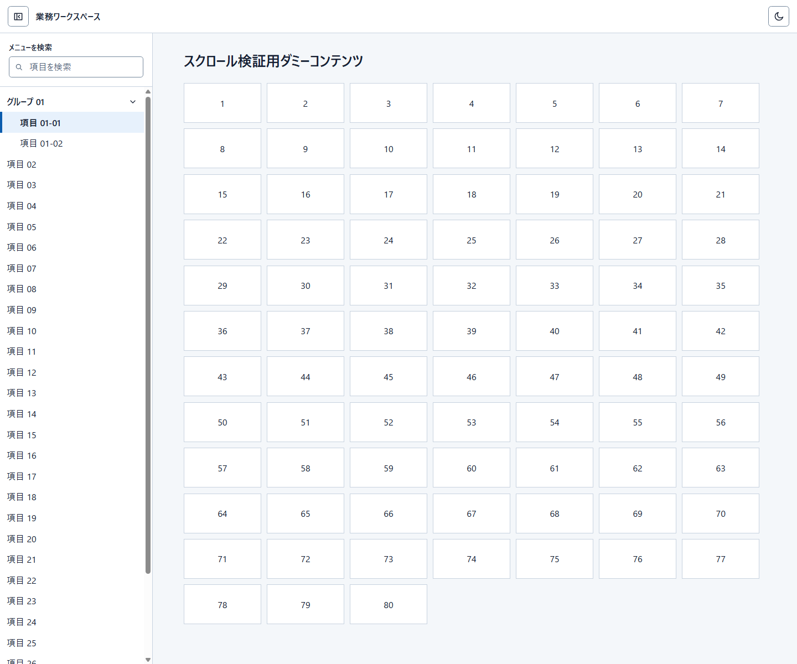

Design knowledge / visual index
Start from a useful example.
Browse UI compositions through separate, state-specific captures. Preserve the intended arrangement and behavior, not incidental pixels or source-code details.
Application shellsImage-first pilotNot an approval registry
Application shells
1 research-selected example

SHELL-001 · Web-origin · Five separate captures
Header-controlled, fully hideable left drawer
A header button opens and closes the left drawer. When closed, the entire navigation disappears—no icon-only rail remains—and the workspace expands into its place.
Explore this shell →
Use this catalog as an example, not a universal rule. Platform control choices and business content belong to the consuming product. See
curated References for explicitly approved interaction models.
Components
1 image candidate · visual adoption pending
PAGINATION-001 · Web-origin · Four independent images
Previous/current/next appearances
First, middle, last and single-page combinations, with source and new proposals distinguished.
Explore pagination appearances →